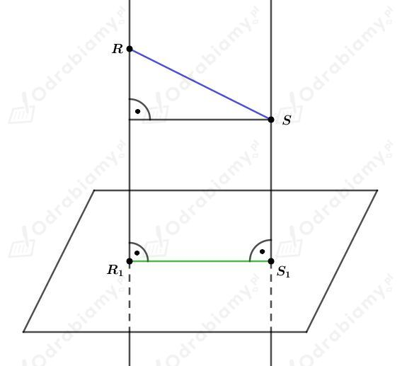
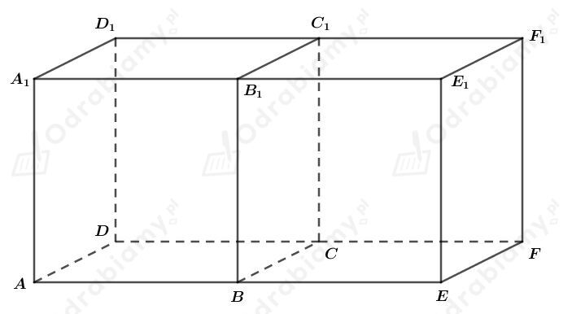
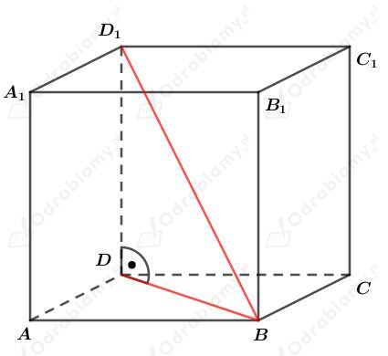
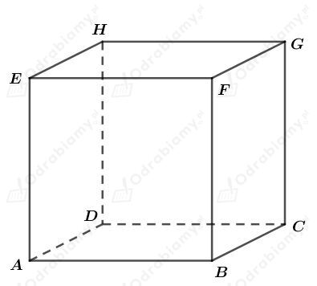

Odcinek R1S1 jest rzutem prostokątnym odcinka RS na płaszczyznę P.
Rysunek:

Odcinek R1S1 nie może być dłuższy od odcinka RS.
Twierdzenie:
Odcinek R1S1 będący rzutem prostokątnym odcinka RS nie może być dłuższy od odcinka RS.
Dowód:
Odcinek RS jest przeciwprostokątną w trójkącie prostokątnym, w którym przyprostokątna ma taką samą długość jak odcinek R1S1.
W trójkącie prostokątnym, przeciwprostokątna jest dłuższa od przyprostokątnej, więc odcinek RS jest dłuższy niż odcinek R1S1.
Gdyby odcinek RS był równoległy do płaszczyzny P, to odcinki RS i R1S1 miałyby jednakową długość.
Zatem, odcinek R1S1 będący rzutem prostokątnym odcinka RS nie może być dłuższy od odcinka RS.
co kończy dowód.
Rysunek:

a)
Wypiszmy proste równoległe i proste prostopadłe do prostej EF1. Mamy:
b)
Wypiszmy proste równoległe i proste prostopadłe do prostej A1C1. Mamy:
Rysunek:

Rzutem prostokątnym odcinka D1B na ścianę ABCD sześcianu jest odcinek DB - jak zaznaczono na rysunku.
a)
Rzutem prostokątnym odcinka D1B na ścianę A1B1C1D1 sześcianu jest odcinek D1B1.
b)
Rzutem prostokątnym odcinka D1B na ścianę ADD1A1 sześcianu jest odcinek AD1.
c)
Rzutem prostokątnym odcinka D1B na ścianę BCC1B1 sześcianu jest odcinek C1B.
d)
Rzutem prostokątnym odcinka D1B na ścianę ABB1A1 sześcianu jest odcinek A1B.
Uzasadnijmy, że dla prostych w przestrzeni nie zachodzi własność:
Jeśli k⊥l i l⊥m, to k||m.
Jako kontrprzykład podamy proste zawierające boki sześcianu. Rysunek:

Niech prosta k będzie prostą zawierającą bok AD.
Niech prosta l będzie prostą zawierającą bok DH.
Proste l i k są prostopadłe (bo boki AD i DH są prostopadłe).
Niech prosta n będzie prostą zawierającą bok DC.
Proste l i n są prostopadłe (bo boki DH i DC są prostopadłe).
Proste k i n nie są równoległe - są prostopadłe (bo boki AD i DC są prostopadłe).